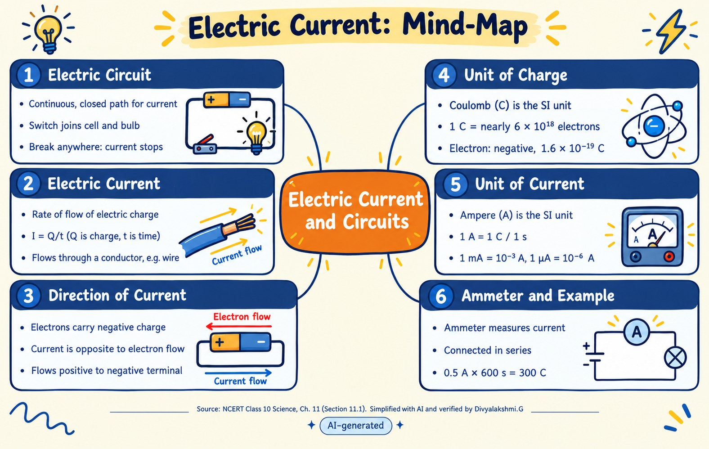

Introduction
Textbook language can be hard to read, especially for students with dyslexia or students still learning the language of instruction. This site turns one NCERT lesson into three easier formats: simple notes, an audio lesson and a mind map. Then you can test yourself.
Lesson: NCERT Class 10 Science, Chapter 11 “Electricity”, Section 11.1 Electric Current and Circuit.
AI-assisted Simplified with AI and checked against the NCERT text by Divyalakshmi.G.
Study Notes
1. Electric current
Electric charge flowing through a conductor, such as a metal wire, is an electric current. Current is the rate of flow of charge: I = Q / t.2. Electric circuit
A continuous, closed path for electric current. If the circuit breaks anywhere, the current stops and the bulb does not glow.3. Direction of current
Electrons carry negative charge in metal wires. By convention, current flows opposite to the flow of electrons, from the positive terminal of the cell to the negative terminal.4. Units
Charge: coulomb (C). One coulomb is the charge of nearly 6 × 1018 electrons. One electron has a negative charge of 1.6 × 10−19 C. Current: ampere (A), where 1 A = 1 C / 1 s. 1 mA = 10−3 A and 1 µA = 10−6 A.5. Ammeter
An ammeter measures current. It is always connected in series.Audio Lesson
Press play to listen to the lesson (about 2 min 30 s). AI-generated voice (ElevenLabs)
Read the audio script
Let us learn about electric current and circuits. Electric current is the flow of electric charge through a conductor. A metallic wire is an example of a conductor. A continuous, closed path for electric current is an electric circuit. A switch joins the cell and the bulb. If the circuit breaks anywhere, the current stops. Then the bulb does not glow. Current is the amount of charge flowing through an area in unit time. The current I equals Q divided by t. In metal wires, electrons carry negative charge. By convention, current flows opposite to the flow of electrons. It flows from the positive terminal of the cell to the negative terminal. The SI unit of charge is the coulomb. One coulomb is the charge of nearly six times ten to the power eighteen electrons. One electron has a negative charge of one point six times ten to the power minus nineteen coulombs. The SI unit of current is the ampere. One ampere equals one coulomb per second. One milliampere equals ten to the power minus three amperes. One microampere equals ten to the power minus six amperes. An ammeter measures electric current. It is always connected in series. In the example, the current is zero point five amperes and the time is six hundred seconds. The charge is three hundred coulombs.
Visual Mind Map
Six important ideas from the lesson. AI-assisted
1. Electric circuit
- Continuous, closed path
- Switch joins cell and bulb
- Break anywhere: current stops
2. Electric current
- Rate of flow of charge
- I = Q/t
- Flows through a conductor
3. Direction of current
- Electrons carry negative charge
- Current is opposite to electron flow
- Positive to negative terminal
4. Unit of charge
- Coulomb (C)
- 1 C = nearly 6 × 1018 electrons
- Electron: 1.6 × 10−19 C, negative
5. Unit of current
- Ampere (A)
- 1 A = 1 C / 1 s
- 1 mA = 10−3 A, 1 µA = 10−6 A
6. Ammeter and example
- Measures current
- Connected in series
- 0.5 A × 600 s = 300 C

AI-generated image, labelled. Source: NCERT Class 10 Science, Ch. 11 (Section 11.1).
Quiz
Choose your answers and click Check My Answers.